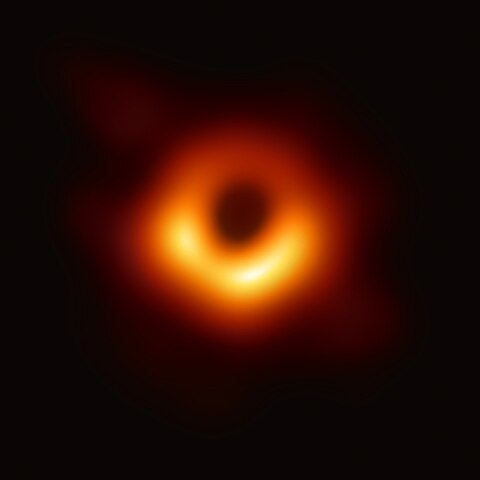

Black Holes
Sagittarius A is a supermassive black hole that was discovered around 2017 and the first image was released in 2022. It was found in the center of the Milky Way galaxy. Black holes have strong gravity pulls that nothing can escape them; even light.